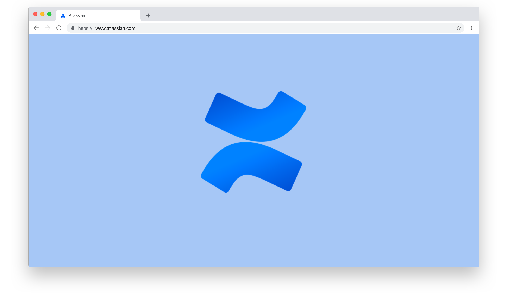

Confluence Spaces — Product Design Intern
In summer 2019, I interned on the Discovery and Organization team, working closely with the product manager, designers and engineers. My project was focused the user experience of creating, setting up and organizing Confluence spaces.For this project, I audited the current experience, analyzed competitor products, drafted a research brief, conducted user research, created design artifacts for mental models with space organization, defined the opportunities, aligned with stakeholders across teams, designed high-fidelity mocks, prototyped the final solution and wrote up a design spec for handoff.
Huge thank you to the Discovery and Organization team, Confluence Cloud designers, my mentor Kseniia Cherniavska and manager Steven Brooks. I couldn't have grown as much as I did without the support and inspiration from these folks!
